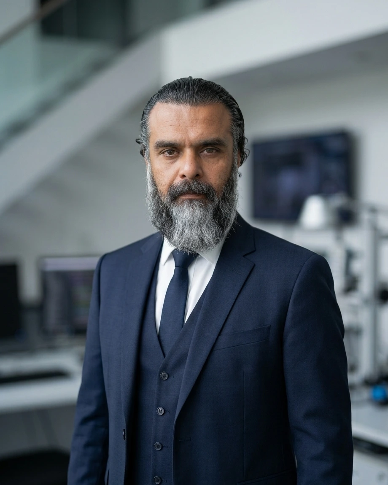

Führung
Dr. Siavash Ardekani
Gründer & Technischer Direktor, ETROYL
Dr. Siavash Ardekani gründete ETROYL, um wissenschaftliches Verständnis, multidisziplinäres Engineering und praktische Umsetzung miteinander zu verbinden. Mit mehr als 25 Jahren Erfahrung in Forschung, Engineering und technischer Führung hat er an komplexen technologischen Systemen gearbeitet, darunter Sensorik, digitale und eingebettete Systeme, Signalverarbeitung, Echtzeitbildgebung, Entwicklung von Testumgebungen für Halbleiterdesigns, Mechatronik und weitere anspruchsvolle Engineering-Umgebungen.
Wissenschaftliche Grundlagen
Dr. Ardekani promovierte an der Université catholique de Louvain; die Promotion wurde im Oktober 2013 abgeschlossen. Seine Doktorarbeit befasste sich mit der Vorwärts- und Inversmodellierung von Bodenradar, mit einer zusätzlichen Spezialisierung auf die Modellierung elektromagnetischer Nahfelder.
Seine wissenschaftliche Arbeit schuf eine fundierte Basis in elektromagnetischen Phänomenen, Radarsensorik, mathematischer und numerischer Modellierung, Signalverarbeitung und inversen Problemen. Diese Disziplinen prägen weiterhin den analytischen Ansatz von ETROYL.
Darüber hinaus führte er Postdoktorandenforschung an der Königlichen Militärakademie Belgiens durch und vertiefte damit seine Erfahrung in anspruchsvollen wissenschaftlichen und technischen Umgebungen.
Engineering-Erfahrung
Im Laufe seiner Karriere arbeitete Dr. Ardekani entlang des gesamten Weges von technischer Untersuchung und Architekturdefinition bis zu Implementierung, Integration, Verifikation und Einsatz. Seine Erfahrung umfasst sowohl praktische Entwicklungsarbeit als auch Verantwortung auf Systemebene in multidisziplinären Programmen.
- Digital- und FPGA-Engineering: leistungsfähige digitale Architekturen, FPGA-basierte Systeme, Echtzeitverarbeitung, Hardware/Software-Co-Design, Verifikation und Integration.
- Embedded- und Echtzeitsysteme: eingebettete Hard- und Software, Systemintegration, Low-Level-Software und Treiber, kundenspezifische Plattformen und Echtzeitverarbeitung.
- Sensorik, Radar und Signalverarbeitung: Radarsensorik, Bodenradar, elektromagnetische Modellierung, digitale Signalverarbeitung und komplexe Sensorsysteme.
- Halbleiter-Testplattformen, Bildgebung und Mechatronik: Entwicklung von Testumgebungen für Halbleiterdesigns, Echtzeit-Bild- und Videosysteme sowie komplexe elektronische und mechatronische Architekturen.
Einige berufliche Arbeiten wurden in vertraulichen oder geschützten Umgebungen durchgeführt und können daher nicht auf Projektebene öffentlich beschrieben werden. Wo Arbeiten besprochen werden können, liegt der Fokus auf technischen Bereichen, Verantwortlichkeiten und übertragbarer Erfahrung statt auf vertraulichen Kunden- oder Programminformationen.
Technische Führung
Über die individuelle technische Entwicklung hinaus hat Dr. Ardekani komplexe Engineering-Aktivitäten geleitet und koordiniert, an denen multidisziplinäre Teams und internationale Stakeholder beteiligt waren. Zu seiner Erfahrung gehören technische Programmkoordination, Entscheidungen auf Systemebene, Architekturdefinition, technisches Risikomanagement und die Koordination von F&E-Aktivitäten in internationalen Umgebungen.
Bei ETROYL bedeutet technische Führung, eng mit dem Engineering verbunden zu bleiben: das zugrunde liegende Problem verstehen, Annahmen hinterfragen, die richtige Architektur definieren, fundierte Abwägungen treffen und technische Kohärenz von der frühen Untersuchung bis zur Implementierung und zum Einsatz sicherstellen.
Berufliche Profile


Die ETROYL-Philosophie
Technologie sollte nicht um ihrer selbst willen existieren. Eine starke Engineering-Lösung beginnt mit dem Verständnis eines Problems auf seinen wissenschaftlichen und technischen Grundlagen, setzt sich durch diszipliniertes Engineering fort und beweist ihren Wert durch praktische Anwendung.
Dies ist das Prinzip hinter ETROYL: Wissenschaft → Engineering → Einsatz. Wissenschaftliches Verständnis bildet die Grundlage. Engineering verwandelt dieses Verständnis in eine kohärente Lösung. Der Einsatz stellt sicher, dass das Ergebnis integriert, validiert, dokumentiert und in der realen Welt genutzt werden kann.
Auf Wissenschaft aufgebaut. Durch Engineering umgesetzt.